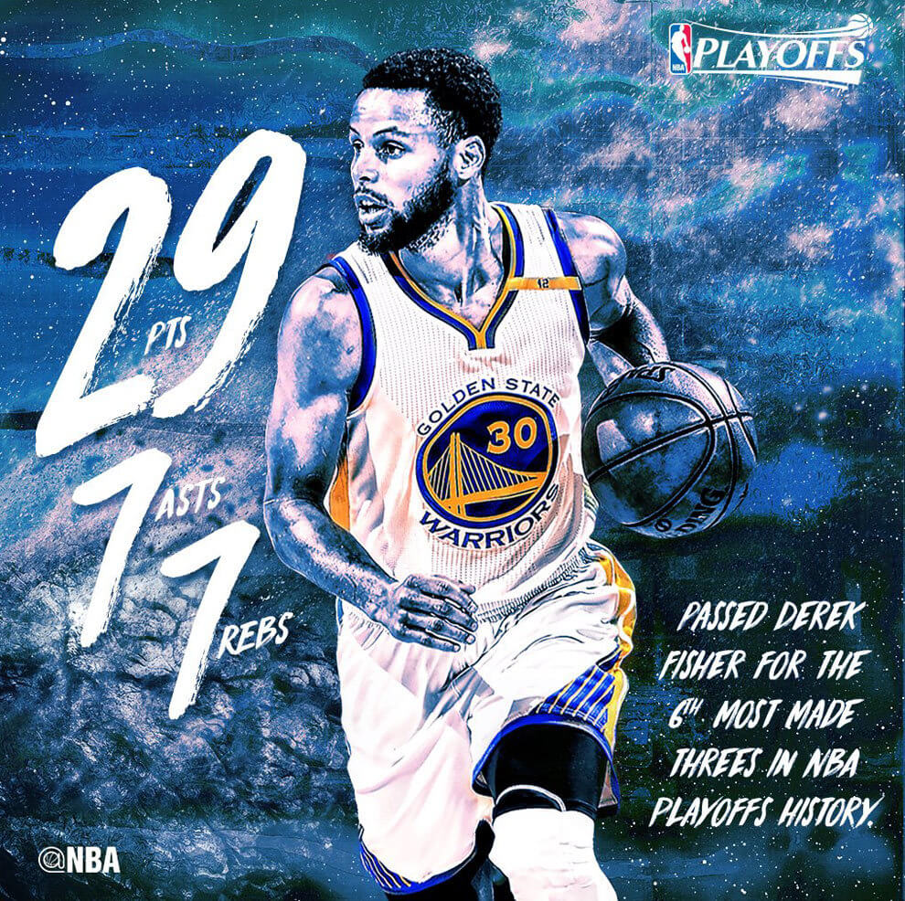
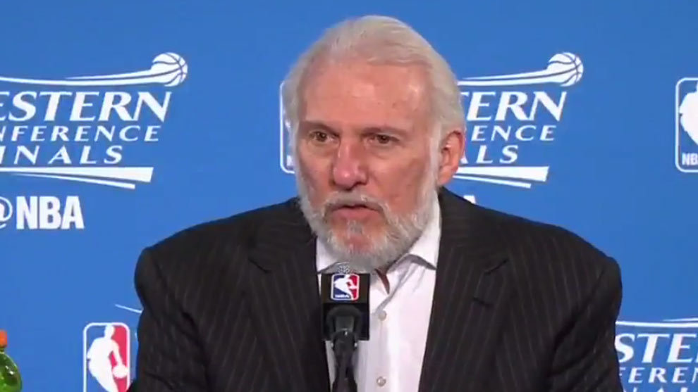
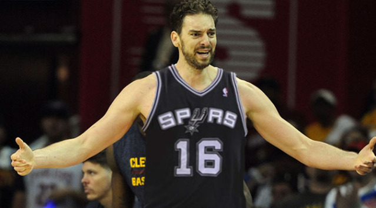

Curry y los Warriors hacen sangre en los Spurs de Pau Gasol con una paliza histórica
Miercoles, 17 Mayo 2017 00:00:00 GMT
Stephen Curry anotó 29 puntos y encabezó el ataque de los Warriors de Golden State que vencieron por 136-100
a los Spurs de San Antonio en el segundo partido de las finales de la Conferencia Oeste que ahora
dominan por 2-0 al mejor de siete.
El tercer partido se jugará el próximo sábado en el AT&T Center de San Antonio, adonde se traslada la serie.
Junto a Curry otros seis jugadores de los Warriors, incluidos tres reservas, tuvieron números de dos dígitos.

El base estrella de los Warriors hizo posible que el equipo concluyesen el primer periodo con un parcial de 33-16,
mientras que los Spurs que tuvieron 6 de 26 tiros de campo obtuvieron dos tantos más que todos los que había conseguido Curry.
La inspiración de Curry desde fuera del perímetro volvió a ser decisiva y le permitió llegar a los 68 en lo
que va de la fase final, mejor marca en la historia de la NBA, además de tener un promedio de 33,0 puntos,
el 57 por ciento de acierto en los tiros de campo y el 49 con los triples.
El escolta novato Patrick McCaw, que tuvo más minutos con la ausencia por lesión del veterano Andre Iguodala,
brilló como sexto hombre al conseguir 18 puntos tras anotar 6 de 8 tiros de campo, incluidos 3 de 4 triples,
y 3-3 desde la línea de personal. Además de repartir cinco asistencias, capturó tres rebotes y recuperó tres balones.
El alero estrella Kevin Durant llegó a los 16 puntos como tercer máximo encestador y el ala-pívot Draymond Green volvió a tener
consistencia en todas las facetas del juego al aportar 13 puntos, nueve rebotes -todos defensivos-, repartió seis asistencias,
recuperó dos balones, perdió uno y puso dos tapones.
El pívot Zaza Pachulia, centro de las críticas del entrenador de los Spurs, Gregg Popovich, al señalarlo como el culpable
de la lesión de alero estrella del equipo tejano Kawhi Leonard, recibió una gran ovación por parte de los aficionados de los
Warriors.
Sin embargo, en el primer cuarto se lesionó al sufrir una contusión en el talón derecho y no pudo volver al partido después
de haber jugado seis minutos y conseguir cuatro puntos y dos asistencias.

Los Spurs, que jugaron sin el alero estrella Kawhi Leonard, baja por lesión en el tobillo izquierdo, tuvieron a Jonathon Simmons,
el jugador que ocupó su puesto de titular como el máximo encestador al conseguir 22 puntos.
Sin Leonard, lesionado con esguince de tobillo izquierdo, los Spurs tuvieron varias opciones de ser el líder del ataque,
incluido el pívot español Pau Gasol, que fue superado por Green, y el entrenador del equipo de San Antonio,
se fue con el ala-pívot LaMarcus Aldridge, que tampoco resultó, porque estuvo perdido durante todo el partido.
Mientras que el alero reserva letón Davis Bertans fue el sexto hombre de los Spurs al conseguir 13 puntos y junto con
Simmons los dos únicos del equipo de San Antonio que tuvieron números de dos dígitos.

Aldridge acabó con ocho puntos y Gasol llegó a los siete tantos en los 16 minutos que disputó tras anotar 2 de 5 tiros de campo
y 3-3 desde la línea de personal.
El jugador de Sant Boi capturó ocho rebotes, que repartió entre ambas canastas, dio una asistencia, recuperó un balón y perdió otros tres.
Mientras que el veterano escolta argentino Manu Ginóbili salió sólo cinco minutos en los que aportó dos puntos, tras fallar los tres
tiros de campo que hizo, incluido un intento de triple, y acertó 2-2 desde la línea de personal,
además de dar una asistencia y cometer dos faltas personales.